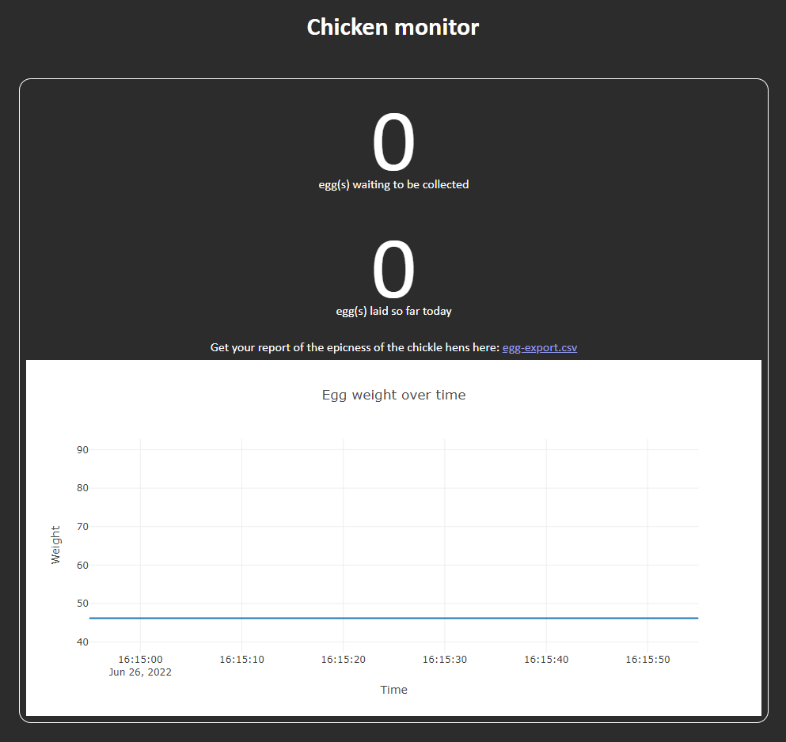

This is a place for me to collect my coding projects. It is all entirely my own work; the projects as well as all the web design.
My projects are mostly just a bit of fun; making computers do cool things or to make tools to make life slightly easier. Mixed in are also some projects which I've done as part of my degree.
I'm a 4th year at Somerville College, University of Oxford, studying Engineering Science. I specialise in software engineering and machine learning, as well as civil/environmental engineering.
Outside of my degree I play bass trombone, ring church bells and play pool/snooker with the university. I'm also a member of Oxford University Air Squadron, an RAF volunteer reserve organisation for university students. I've recently got into flying cinematic and racing FPV drones.
This project was motivated by repeated complaints from my chemist friends having to create a COSHH (Control Of Substances Hazardous to Health) form for each of their experiments. Their previous work flow required searching a chemical database website (PubChem) for their chemical, scrolling to find the hazards, then writing them out manually (the website disallowed copy and paste).
My response "surely it can be automated" was met with "no, this is the only way". That was enough motivation...
My website makes use of two of PubChem's APIs; their search API is used to get the chemical's unique ID, which is then used in a request to PubChem's main API to get in-depth information about the chemical. This information is then parsed to extract the hazard information, as well as other useful information like boiling point and molecular weight. My site further processes the hazard codes, removing redundant codes (for example, rejecting "Causes skin irritation" when "Causes serious skin irritation" is also present), as well as tidying anomalous H-code formatting.
This software was made as part of my 3rd year engineering group project. The brief was to "Create a multi-agent drone system". My group chose to create a sheep herding system; it's a novel and relatively unresearched area, and I also have a personal interest (we own sheep).
Part of my role in this project was to create a simulation environment to predict the sheep's response to drones.
Initially, the drone path planning algorithm was planned to be a reinforcement learnt algorithm, which would require a large dataset. The simulation would act as an infinite dataset for the algorithm to train with; new data could be generated on-demand. Even after the reinforcement learning strategy was dismissed, a simulation environment was still required to validate the drone path planning algorithms, particularly because we had no access to any real sheep for this purpose. The simulation was also helpful to train/test the image processing algorithms; a dataset could be created by saving the screen as well as a list of sheep positions.
An adapted boids simulation was used to simulate the sheep's behaviour. This was implemented in python using pygame to handle the graphics. A screenshot of the boids simulation is below:
My other role was to create a user interface through which a farmer might control the drone herding process. Special care was taken to make the HRI as intuitive as possible.
A functional HRI was created using PyQt5 in conjunction with Google's Maps API, using 1240 lines of code (814 Python, 378 JavaScript and 48 HTML). This was able to display the sheep location data created by the simation environment, as well as create, edit and display walls and gates on top of the map.
This software is part of my 4th year engineering individual project. The inspiration for this project comes from my enjoyment of pool and snooker; approaching a supervisor and "selling" the project to them allowed me to choose my own project, rather than choose from a list of academic-initiated projects. Fortunately I found a supervisor who was invested in the project; I would have likely done this project in my own time anyway...
Blah blah
This project is very much still in development, and will be until at least the end of this academic year, when the report deadline is.
I'm still yet to create a nice UI for this app. I plan to create an app for this; possibly creating something in Unity, making release to both iOS/iPadOS and Android much easier. Mobile is the ideal platform for this because every phone/tablet has a camera and a screen, and is portable, making it ideal for this application. A desktop app will most likely be created for ease of development, and for more permanent setups; eg if a coach works full time on a given table.
I'd also like to add the ability to track player accuracy. This would take the form of leaving the app to "watch" the player during a practice session, taking note of each shot played, and the accuracy with which it was played. Ideally this process would be fully automated, allowing the app to be ignored and minimally impede the practice session. At the end, the player would receive a report including their strengths and weaknesses; for example, it would highlight if the player were consistently missing a single type of shot, or if they were consistently missing left/right or thick/thin. At this point it would be fairly easy to implement automatic scoring, at least for potting points. Once these have been implemented, I believe the software would be compellingly marketable.
I found out one day that it's possible to export a WhatsApp chat (both group and individual). This made me curious as to what could be done with this data, and this project is the result of that.
As it transpires, it's also possible to get exports of Facebook Messenger chats, which I also implemented.
My script takes the exported chat and converts it into a more conducive format for searching; each message becoming an object of type
Message, which
handles all the relevant information (eg. timestamp, message contents, sender etc.). The Message class has a
search function, which returns the number of results in the text. This function by default searches for full words,
but also supports Regex search for maximal flexibility. All the messages are iterated over, tallying the number of results in any given
day.
The results of the search are cached into a pandas database. While the search isn't painfully slow, particularly on a modern CPU, it still makes sense to cache data, particularly when normalisation is used; the script allows you to display each result normalised normalised by any other result, essentially dividing one column by another. These normalised columns are also cached to make the script as responsive as possible. An example of this feature can be seen in the second image.
The UI uses python's Tkinter library, with matplotlib to drive the graph.
This is one of my older projects, made just for the fun of it.
At the start of the game, the play clicks and drags on their side of the board to place ships. Once all ships are placed, play commences. The player takes shots by clicking on the computer's side of the board, and the computer takes shots back. Once all of one player's ships are sunk, the game ends.
Once I'd created the game, I turned it into a MacOS app using the python library py2applet.
The AI initially shoots randomly on a grid of alternating squares, in the knowledge that that'll catch even the 2-long ship. When it hits a ship, it will systematically hunt it down to ensure that it's destroyed, then continue with the previous strategy of shooting at alternating squares.
When in the "alternating square" regime, the AI checks to ensure that to square it's shooting at is possible to be filled by a ship. For example if all ships have been sunk apart from the 5-long, then there's no point shooting in only 4-long gaps. If this is the case, the AI will choose to shoot at another square.
This project was just a bit of fun to get some experience with writing realtime simulations and coding with TypeScript. You can have a fiddle with it here.
Each frame the simulation calculates the force vector applied to each entity (by summing gravitational attractions from
each of the other entities). This is then divided by the entity's mass to get acceleration and subsequently
integrated twice approximately by multiplying by dt twice each frame, accumulating velocity.
As mentioned in my welcome section, this website is for me to display my coding projects that I've worked on during the last few years. I built it myself from the bottom up; my other websites are based on the same basic framework.
As well as sheep, we have chickens. It's a nuisance to have to repeatedly check during the day whether there are eggs ready for collection; this tool was designed to combat that issue. As well as that, this tool could be expanded to identify which chicken has laid which egg - more on that in the "Further development section".
This tool takes advantage of a digital weighing scale connected to a Raspberry Pi which can be fitted underneath the egg collection area. All eggs laid in the nesting box roll into the egg collection area, causing a step change in weight recorded by the scales. This step can be recorded and measured to identify the timestamp and mass of the egg.
This information can then be accessed via an HTML front end hosted by the Raspberry Pi. This means that the site can be accessed from outside the local network, with the port forwarding and DNS settings configured.
I'd like to expand this project to include an RFID sensor in the nesting box, in conjuction with RFID leg bands on the chickens, to detect which chicken lays which eggs. This would prove useful to detect which chickens are off lay or ill, leading to improved flock management.
It would also be nice to integrate an programmable pop-hole closing system, handled by the same Raspberry Pi. The chickens need to be let out near sunrise, which gets particularly early during the summer; this tool would allow the door to be opened at a preprogrammed time (or be triggered by a light sensor), removing the need to wake up so early. This could also be used in conjuction with a couple of RFID sensors to ensure all chickens are inside the house before the door is closed for the night.